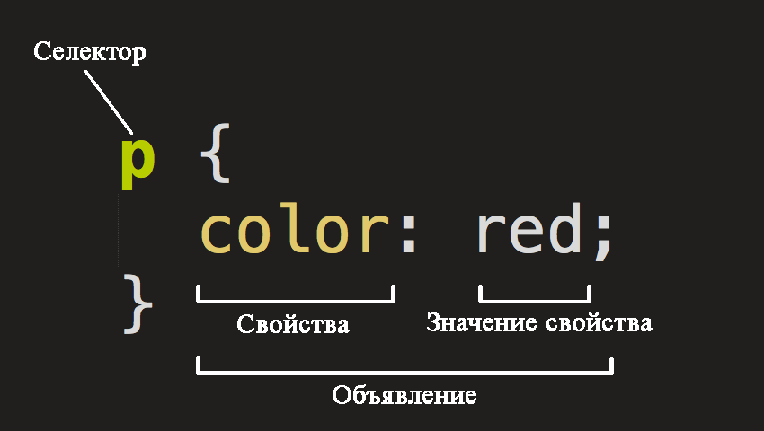

.png)


Таблицы стилей(CSS)
CSS (Cascading Style Sheets) — это код, который вы используете для стилизации web-страницы. Основы CSS помогут вам понять, что вам нужно для начала работы. Мы ответим на такие вопросы как: Как сделать текст черным или красным? Как сделать так, чтобы контент появлялся в определенном месте на экране? Как украсить web-страницу с помощью фоновых изображений и цветов?
Так что же такое CSS?
Как и HTML, CSS на самом деле не является языком программирования. Это не язык разметки — это язык спецификаций для таблицы стилей. Это означает, что он позволяет применять стили выборочно к элементам в документах HTML. Например, чтобы выбрать все элементы абзаца на HTML странице и изменить текст внутри них с черного на красный, вы должны написать этот CSS:
p {
color: red;
}
Анатомия набора CSS правил
Давайте взглянем на вышеупомянутый CSS немного более подробно:
Вся структура называется набором правил (но зачастую для краткости "правило" ). Отметим также имена отдельных частей:
Имя HTML элемента в начале набора правил. Он выбирает элемент(ы) для применения стиля (в данном случае, элементы
Единственное правило, например
Способы, которыми вы можете стилизовать определенный HTML элемент (в данном случае, color является свойством для элементов
Справа от свойства, после двоеточия, у нас есть значение свойства, который выбирает одно из множества возможных значений для данного свойства (существует множество значений
Обратите внимание на важные части синтаксиса:
- Каждый набор правил (кроме селектора) должен быть обернут в фигурные скобки (
{} ). - В каждом объявлении необходимо использовать двоеточие (
: ), чтобы отделить свойство от его значений. - В каждом наборе правил вы должны использовать точку с запятой (
; ), чтобы отделить каждое объявление от следующего.
Таким образом, чтобы изменить несколько значений свойств сразу, вам просто нужно написать их, разделяя точкой с запятой, например так:
p {
color: red;
width: 500px;
border: 1px solid black;
}
Выбор нескольких элементов
Вы также можете выбрать несколько элементов разного типа и применить единый набор правил для всех из них. Добавьте несколько селекторов, разделенных запятыми. Например:
p,li,h1 {
color: red;
}
Разные типы селекторов
Существует множество различных типов селектора. Выше мы рассматривали только селектор элементов, который выбирает все элементы определенного типа в HTML документе. Но мы можем сделать выбор более конкретным. Вот некоторые из наиболее распространенных типов селекторов:
| Имя селектора | Что выбирает | Пример |
|---|---|---|
| Селектор элемента (иногда называемый селектором тега или типа) | Все HTML элемент(ы) указанного типа. | pВыбирает <p> |
| ID селектор | Элемент на странице с указанным ID на данной HTML. Лучше всего использовать один элемент для каждого ID (и конечно один ID для каждого элемента), даже если вам разрешено использовать один и тот же ID для нескольких элементов. | #my-idВыбирает <p id="my-id"> или <a id="my-id"> |
| Селектор класса | Элемент(ы) на странице с указанным классом (множество экземпляров класса может объявляться на странице). | .my-classВыбирает <p class="my-class"> и <a class="my-class"> |
| Селектор атрибута | Элемент(ы) на странице с указанным атрибутом. | img[src]Выбирает <img src="myimage.png"> но не <img> |
| Селектор псевдо-класса | Указанные элемент(ы), но только в случае определенного состояния, например, при наведении курсора. | a:hoverВыбирает <a>, но только тогда, когда указатель мыши наведен на ссылку. |
Блоки
Одна вещь, которую вы заметите в написании CSS, заключается в том, что многое из этого касается блоков - настройка их размера, цвета, положения и т.д. Большинство HTML элементов на странице можно рассматривать как блоки, расположенные друг над другом.
Не удивительно, макет CSS основан, главным образом, на блочной модели (
padding , пространство только вокруг контента (например, вокруг абзаца текста)border , сплошная линия, которая расположена рядом сpadding margin , пространство вокруг внешней стороны элемента
В этом разделе мы также используем:
width (ширину элемента)background-color , цвет позади контента и padding элементовcolor , цвет контента элемента (обычно текста)text-shadow : устанавливает тень на тексте внутри элементаdisplay : устанавливает режим отображения элемента (пока что не волнуйтесь об этом)
Изменение цвета страницы
html {
background-color: #00539F;
}
Разбираемся с "телом" страницы
body {
width: 600px;
margin: 0 auto;
background-color: #FF9500;
padding: 0 20px 20px 20px;
border: 5px solid black;
}
Теперь для
width: 600px; — заставляет тело быть всегда 600 пикселей в ширину.margin: 0 auto; — когда вы устанавливаете два значения для таких свойств как margin или padding, первое значение элемента влияет на верхнюю и нижнюю сторону (делает их 0 в данном случае), и второе значение на левую и правую сторону (здесь, auto является особым значением, которое делит доступное пространство по горизонтали поровну слева и справа).background-color:#FF9500; — как и прежде, устанавливает цвет фона элемента. Я использовал красновато-оранжевый для тела, в отличие от темно-синего цвета для<html> элемента, но не стесняйтесь и эксперементируйте.padding: 0 20px 20px 20px; — у нас есть четыре значения, установленные для padding, чтобы сделать немного пространства вокруг нашего контента. В этот раз мы не устанавливаем padding на верхней части тела, но делаем 20 пикселей слева, снизу и справа. Значения устанавливаются сверху, справа, снизу, слева, в таком порядке.border: 5px solid black; — просто устанавливает сплошную черную рамку шириной 5 пикселей со всех сторон тела.
Позиционирование и стилизация нашего заголовка главной страницы
h1 {
margin: 0;
padding: 20px 0;
color: #00539F;
text-shadow: 3px 3px 1px black;
}
Вы, возможно, заметили, что есть ужасный разрыв в верхней части тела. Это происходит, потому что браузеры применяют некоторый стиль по умолчанию для элемента
Затем мы установили заголовку верхний и нижний
Здесь, мы использовали одно довольно интересное свойство - это
- Первое значение пикселей задает горизонтальное смещение тени от текста — как далеко она движется поперек: отрицательное значение должно двигать ее влево.
- Второе значение пикселей задает вертикальное смещение тени от текста — как далеко она движется вниз, в этом примере: отрицательное значение должно переместить ее вверх.
- Третье значение пикселей задает радиус размытия тени — большее значение будет означать более размытую тень.
- Четвертое значение задает основной цвет тени.
И вновь попробуйте поэкспериментировать с различными значениями, чтобы посмотреть, что получится.
Центрирование изображения
img {
display: block;
margin: 0 auto;
}
В заключение, мы отцентрируем изображение, чтобы оно лучше выглядело. Мы можем использовать